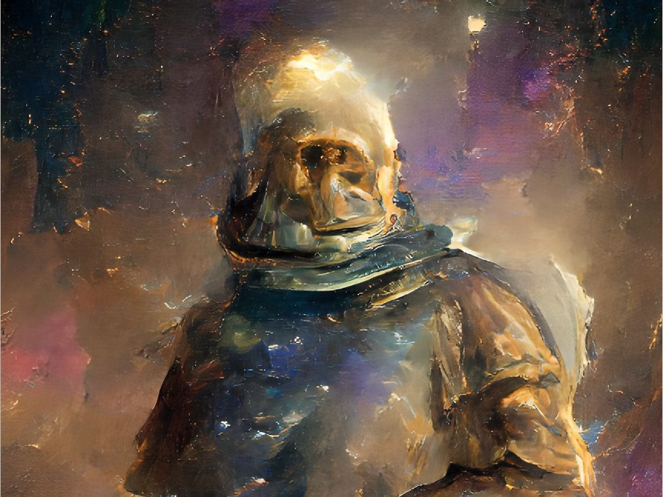

Fabricated AI Portraits
by Les Andersson
Collared 
Artificial Intelligence (AI)


This is the last of 14 AI portraits.
To review, return to the first portrait by clicking the next button on left.
Collared 
Artificial Intelligence (AI)

This is the last of 14 AI portraits.
To review, return to the first portrait by clicking the next button on left.